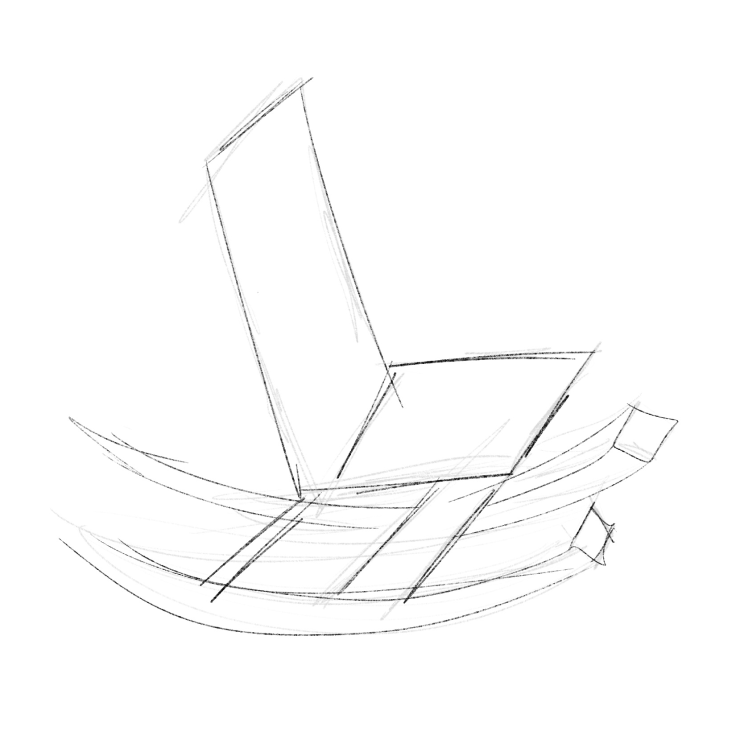
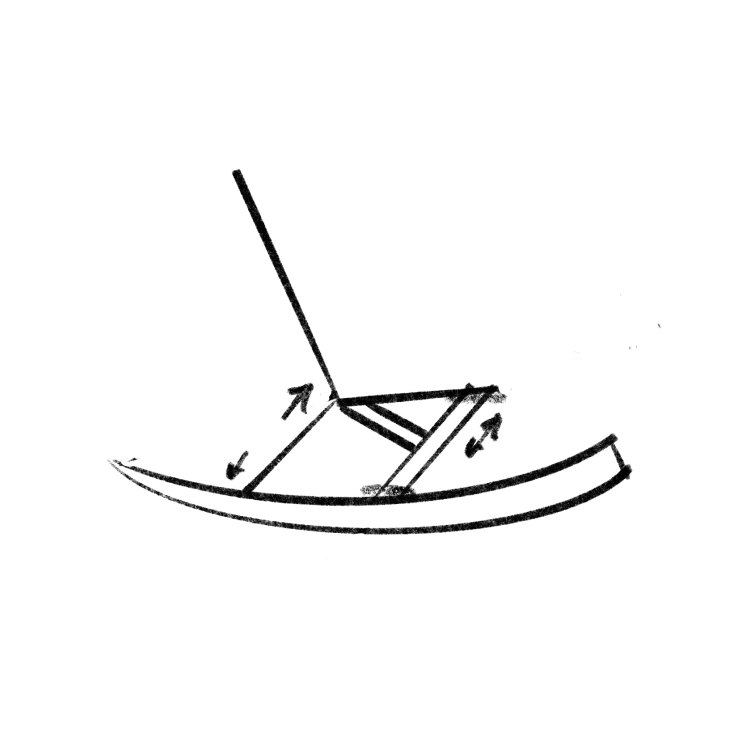
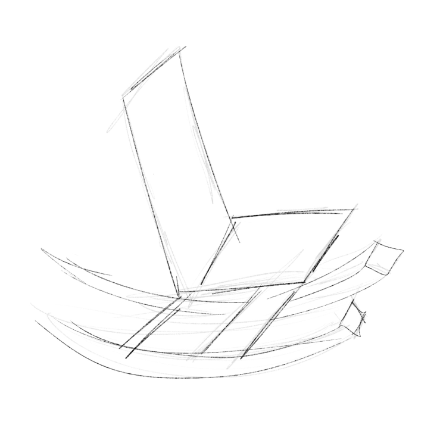
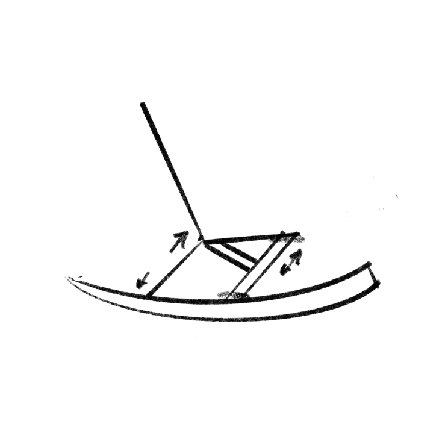

Not your grandma's rocking chair
This design was for a furniture design elective that allowed for open exporation of form through furniture. I chose to design a rocking chair as a way of exploring form and motion through furnitureg
- Project:
- Newschool of Architecture & Design
- Duration:
- 10 weeks
- Participants:
- Solo
- When:
- Spring 2022
Sketches
 



Process
The first iterations were centered around the topic of nature and my experiences with it. Ideally I wanted this to be a piece that I would one day have in my home.
Physical
Some of the physics were in question based on the shape and function of the design. To test these issues I decided to 3D print a scale model for the final. This allowed me to make sure that the neutral position was correct and that all the parts snapped together like I had planned.